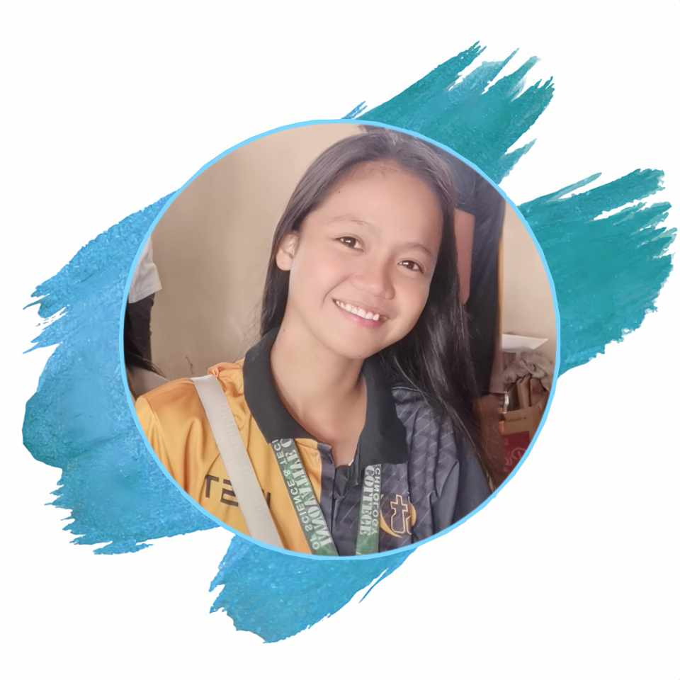

Hello!! Have a nice day.

Hi, my name is Ericca Apostol, and I'm from Pag-asa, Bansud, Oriental Mindoro. I'm 21 years old. I'm pursuing a Bachelor of Science in Information Technology (BSIT) in my fourth year at Innovative College of Science and Technology. I work as a student at Karen Wellness and Beauty Center in addition to my academics. I work and study part-time and have strong interests in technology and wellness. I'm excited to combine my hobbies with my job and will always be looking for new and exciting possibilities to learn and develop.